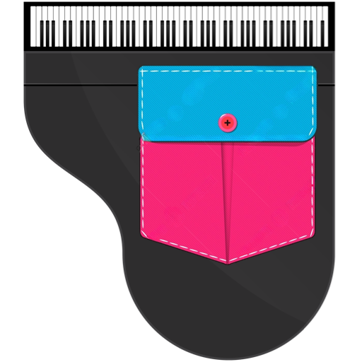

p
i
a
n
o
i
n
t
a
s
c
a
Istruzioni
8 note
5 note
Scala cromatica
Due ottave
Für Elise
L’amour toujours
Pokeball
Fart mode
Istruzioni
×
Mettiti in uno spazio ampio e silenzioso
Scarica lo
schema delle note
, ritaglialo e disponilo attorno a te sul pavimento
Alza al massimo il volume del telefono
Girati in direzione della prima nota (C/Do rosso) e tenendo il telefono davanti a te premi l’omino che sta al centro
Dai il consenso all’utilizzo dei sensori di movimento
Verifica che girando attorno a te stesso, suonino le note corrispondenti
Inserisci il telefono nella tasca anteriore dei pantaloni, con lo
schermo rivolto davanti a te
e l'
altoparlante verso il basso
Sollevando la gamba
farai suonare la nota che si trova davanti a te
Se vuoi, puoi provare anche altri schemi di disposizione delle note
Se non sai da dove cominciare, scarica lo spartito di
Jingle bells
Se ti piace,
Se vuoi sapere come funziona:
F